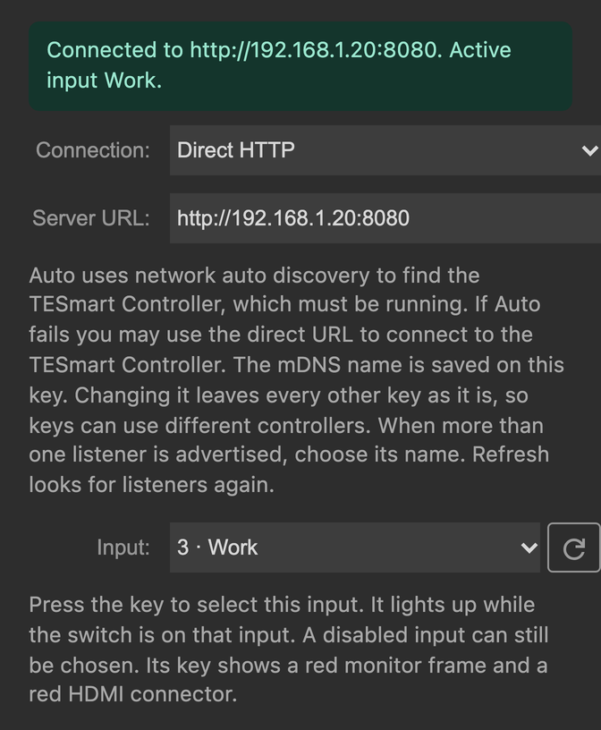
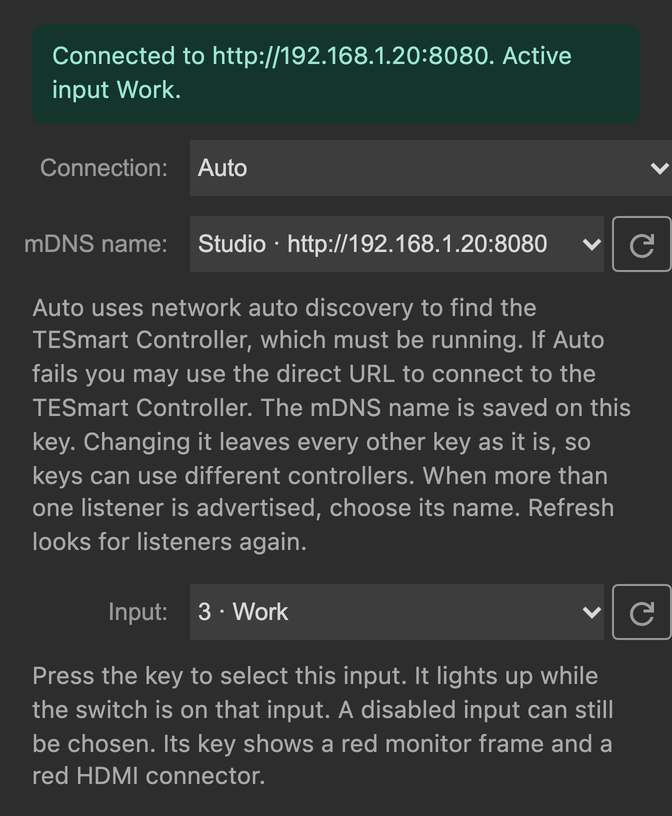
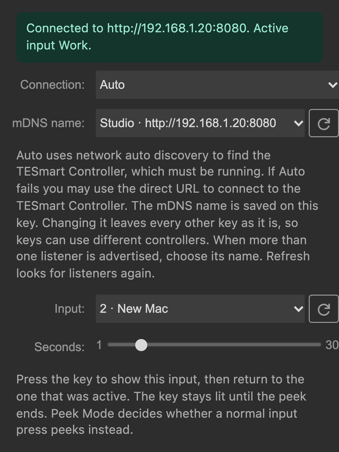
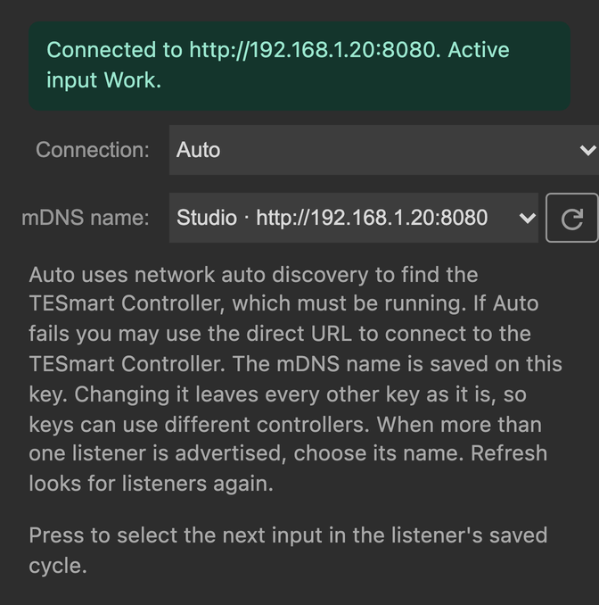
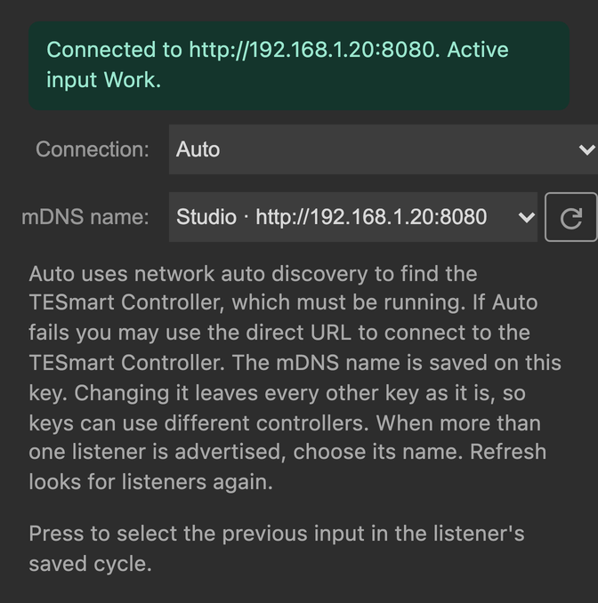
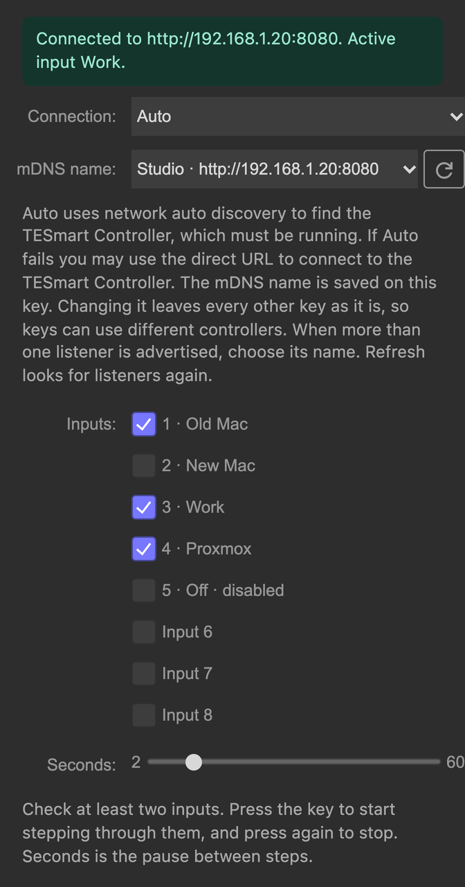
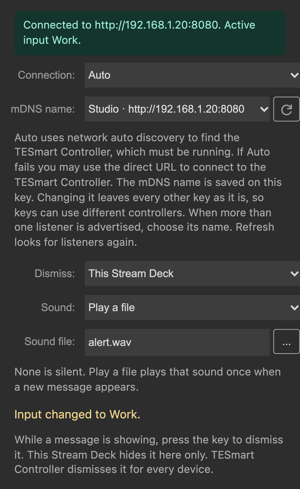
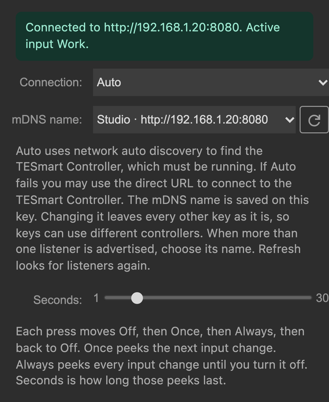

A native plugin is on the way. Keys use the input names already stored
on your listener, light the input that is live, and cover the same
moves as the floating kit.
Every key needs a running tesmartctl listener (tesmartctl listen
with HTTP). Connection mode and the server URL are shared by every key.
The mDNS name is saved on the key you are editing, so keys can talk to
different controllers.

Direct HTTP. Auto replaces Server URL with an mDNS name menu.
Connection
Auto or Direct HTTP. The default
is Auto. Changing it changes every key.
mDNS name
Shown when Connection is Auto. Pick the listener this key should
use. The menu lists each advertised name and address. A name is
required when more than one listener answers. Refresh looks for
listeners again. One advertised listener is used as-is. Changing
this name leaves every other key as it is.
Server URL
Shown when Connection is Direct HTTP. The computer running
tesmartctl, for example
http://127.0.0.1:8080 or
http://192.168.1.20:8080. This is not the switch
address. The default is http://127.0.0.1:8080.
Changing the URL changes every key.
Auto tries, in order, the last URL this key reached, listeners
advertised as _wbevan-tesmart._tcp,
TESMART_VIA from the tesmartctl env file, then
http://127.0.0.1:8080.
Input
Stream Deck action: Input

Input key connected with Auto.
Press the key to select this input. It lights up while the switch
is on that input. The title is the input’s local name. A short
name stays on one line. A longer name wraps to a second line.
The HDMI input this key selects. The menu is filled from the
listener and shows each number and local name. The default is
input 1. Refresh reloads the list. A disabled input stays in
the menu and can still be assigned. That key draws a red
monitor frame and a red HDMI connector, and the listener
refuses the press.
Peek
Stream Deck action: Peek Input

Peek, with the input and how long to show it.
Press the key to show this input, then return to the input that
was active. The key stays lit until the peek ends.
The HDMI input to show. Same menu as an Input key, including
disabled inputs. The default is input 1.
Seconds
How long the peek lasts, from 1 to 30. The default is 5.
Next
Stream Deck action: Next Input

Next uses the listener’s saved cycle. No extra fields.
Press to select the next input in the cycle saved on the
listener. The key does not choose that list.
Configuration
Connection, mDNS name, Server URL
Required. These are the only settings. See
Connection.
Previous
Stream Deck action: Previous Input

Previous uses the listener’s saved cycle. No extra fields.
Press to select the previous input in the cycle saved on the
listener.
Configuration
Connection, mDNS name, Server URL
Required. These are the only settings. See
Connection.
Cycle
Stream Deck action: Cycle Input

Cycle walks the inputs checked on this key.
Press once to start. The first step happens immediately, then the
key keeps stepping until you press it again. The key stays lit
while the timer is running, including after you leave the page.
This list is separate from the listener’s saved cycle.
Check at least two inputs. The list uses the listener’s names.
A disabled input is marked disabled and can still be checked.
Seconds
The pause between steps, from 2 to 60. The default is 10.
Banner
Stream Deck action: Banner

Banner dismiss scope, optional sound, and the live message.
While the listener has a message, the key draws a bell and scrolls
that message. A short message stays centered. Press the key to
dismiss the message that is showing. The inspector also shows the
current message.
This Stream Deck hides the message on this
Stream Deck and sends nothing. TESmart Controller
dismisses it for every device that follows the listener. The
default is This Stream Deck. The next different message shows
again.
Sound
None is silent. Play a file
plays the sound file once when a new message starts. A message
that is already showing when the plugin connects does not play.
The same message does not play again until it goes away and
comes back. The default is None.
Sound file
Shown when Sound is Play a file. Choose an audio file:
.aif, .aiff, .caf,
.flac, .m4a, .mp3,
.ogg, .wav, or .wma.
Peek Settings Toggle
Stream Deck action: Peek Mode

Peek settings. Seconds applies to Once and Always.
This key does not move the switch. Each press moves Off, then
Once, then Always, then back to Off. Once peeks the next plain
input change. Always peeks every input change until you turn it
off. The mode is one setting for the whole listener, so every
Peek Settings Toggle key shows the same mode.